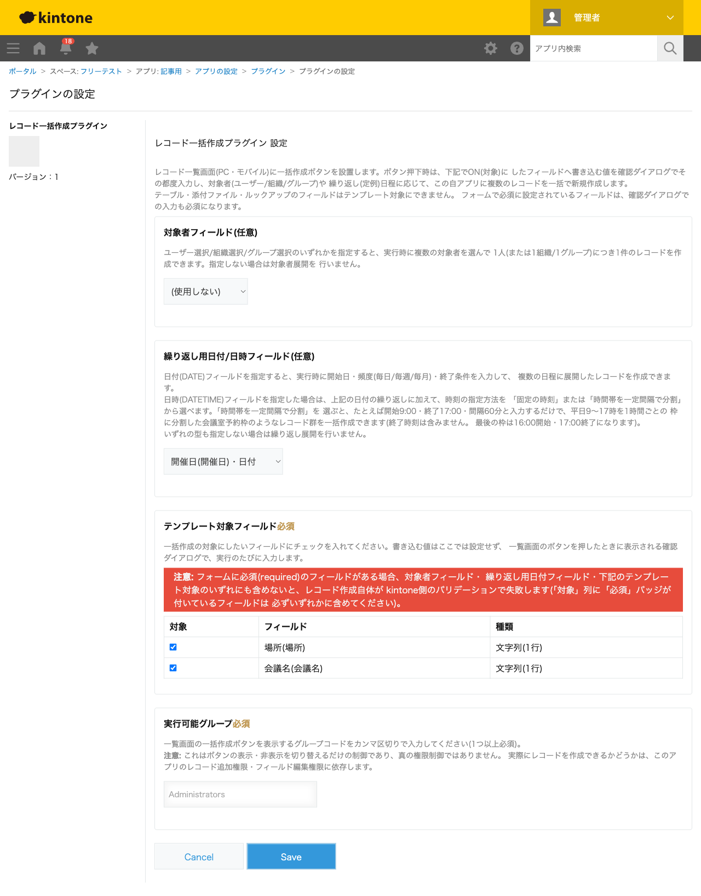
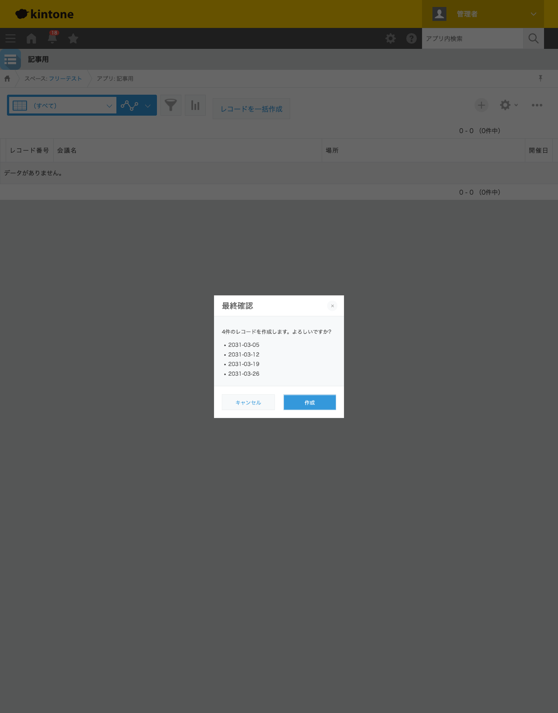
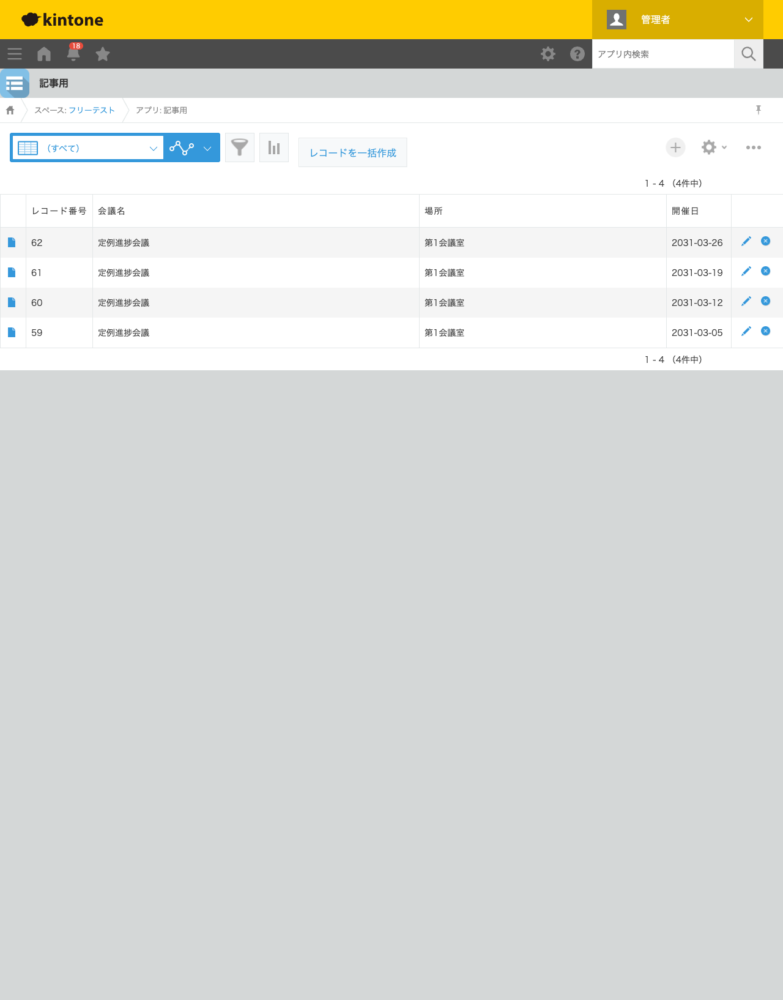

GovAppsプラグイン 安全性を確認できる無料kintoneプラグイン集
「毎週の定例会議」「月2回の点検」のように、同じ内容のレコードを日付だけ変えて何件も作りたい 場面は多くあります。標準機能の「複製」ボタンでは1件ずつしか作れず、開催日を1件ずつ入力し直すのは 手間がかかります。この記事では、繰り返しの日程をまとめて指定するだけで複数レコードを一括作成する 方法を、実際の設定画面と作成結果つきで解説します。
kintoneの標準機能には「複製」ボタンがありますが、これは1レコードずつの複製です。定例会議を 向こう1か月分登録したい場合、開催日欄だけを書き換えながら複製を繰り返すことになり、件数が増える ほど手間とミスのリスクが増えます。「毎週水曜」「毎月5日と20日」のような繰り返しルールから日付を 自動生成する機能は標準にはありません。JavaScriptカスタマイズを自作すれば実現できますが、曜日・ 月次指定・終了条件(回数/終了日)の計算ロジックを自前で書く必要があり、簡単な作業ではありません。
「繰り返しの日程からレコードをまとめて作る」機能を用意する方法は、大きく4つあります。それぞれの 向き不向きをまとめました。
| 方法 | 向いている場合 | 注意点 |
|---|---|---|
| kintone標準機能のみ | 件数が数件程度で、手作業の複製でも十分な場合 | 件数が増えるほど手作業のコピー&ペーストが負担になる |
| JavaScriptを自作する | 社内に開発者がいて、独自の繰り返しルールが必要な場合 | 日付計算ロジックの実装・保守が必要。担当者の異動時に引き継ぎコストがかかる |
| 有料の他社プラグイン | 予算があり、手厚いサポートを求める場合 | 月額課金が発生する。ソースコードが非公開で、外部通信の有無を利用者側で確認しにくいことが多い |
| GovAppsプラグイン(このプラグイン) | 無料で試したい、社内・庁内でセキュリティを確認してから導入したい場合 | 機能追加の要望はGitHub Issueベース(個別カスタマイズの請負は行っていない) |
GovAppsのプラグインはすべて無料・広告なしで、追加課金なしで使い続けられます。 ソースコードはGitHubで全公開しているオープンソースなので、 「本当に外部と通信していないか」「入力値をどう扱っているか」を自治体・企業のセキュリティ担当者 自身の目で確認できます(このプラグインも個別ページにセキュリティレビュー結果を掲載しています)。
レコード一括作成プラグインには、開始日・頻度(毎日/毎週/毎月)・ 終了条件(回数または終了日)を指定するだけで、複数レコードを一括作成する機能があります。設定は この3ステップです。

レコード一覧画面の「レコードを一括作成」ボタンを押すと、会議名・場所を入力するダイアログと、 繰り返し日程(開始日・頻度・終了条件)を指定する画面が表示されます。今回は開始日2031-03-05・ 頻度「毎週」・曜日「水」・回数「4」で入力しました。最終確認ダイアログには、生成される4件分の 日付が一覧表示されます。

「作成」を押すと、4週分の定例会議レコードが一括で作成されます。会議名・場所は 毎回同じ内容が入り、開催日だけが週ごとに異なります。

翌月分を追加したい場合も、次回実行時にダイアログで開始日と回数を指定し直すだけです。曜日を 複数選択したり、頻度を「毎月」に変えて「5日, 20日」のような日付指定にすることもできます。